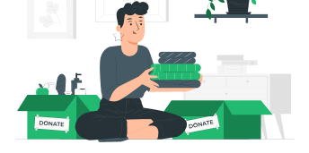

<ion-content>
  <ion-header>
    <ion-row class="icons">
      
      
    </ion-row>
    
  </ion-header>
  <ion-row class="title">Mes associations</ion-row>
  <ion-row>
    <ion-button fill="clear" (click)="showPreviousPage()" *ngIf="hasPreviousPage()">
      <ion-icon name="caret-up-outline"></ion-icon>
    </ion-button>
  </ion-row>
  <ion-grid>
    <ion-row class="ion-justify-content-evenly">
      <ion-col *ngFor="let image of getDisplayedImages()">
        <!-- Mettre l'image des assos ici -->
        {{image}}
      </ion-col>
    </ion-row>
  </ion-grid>
  <ion-row>
    <ion-button fill="clear" (click)="showNextPage()" *ngIf="hasNextPage()">
      <ion-icon name="caret-down-outline"></ion-icon>
    </ion-button>
  </ion-row>
</ion-content>